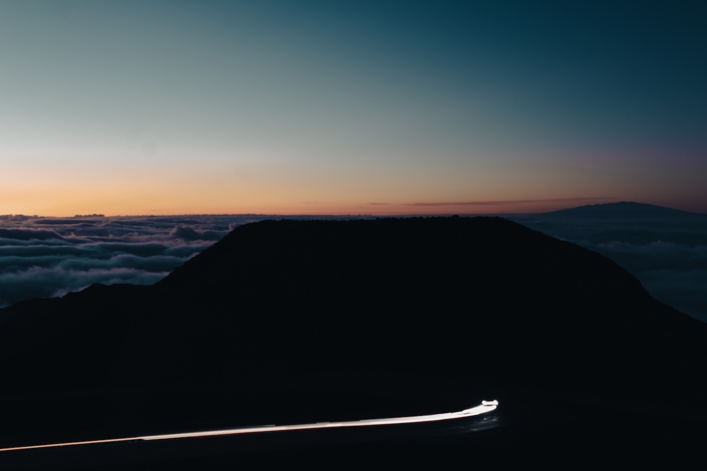

Haleakalā National Park
Photographed at Haleakalā National Park in Maui, Hawaii, 2026, and edited in Photoshop. A long exposure turns passing headlights into a leading line, while the dark mountain against the soft sunrise creates strong contrast and a calm, quiet mood.